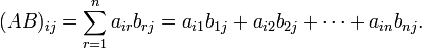

矩阵，是线性代数中的基本概念之一。一个m×n的矩阵就是m×n个数排成m行n列的一个数阵。在计算机中，一个矩阵实际上就是一个二维数组。因此，可以将矩阵定义为一个结构体：
struct Matrix
{
int mat[110][110]; // 存储矩阵中各元素
int row,col; // 矩阵的大小，row行，col列
};
矩阵相乘是矩阵的一种基本运算。
设A为m×n矩阵，B为n×k矩阵，则它们的乘积AB（有时记做A·B）是一个m×k矩阵。
其乘积矩阵A·B的第i行第j列的元素为第一个矩阵A第i行上的n个数与第二个矩阵B第j列上的n个数对应相乘后所得的n个乘积之和。即：

需要注意的是：只有当矩阵A的列数与矩阵B的行数相等时，矩阵A×B才有意义。因此，矩阵相乘不满足交换律。设A是3×4矩阵，B是4×5矩阵，A与B相乘后，A·B是3×5矩阵；但B·A根本就无法运算。
矩阵乘法满足结合律。
【例1】矩阵的乘法。
输入矩阵a和矩阵b的数据，输出新的矩阵c=a*b。
例如，样例输入
4 3
1 2 3
4 5 6
7 8 9
10 11 12
3 5
7 8 9 10 11
4 5 6 7 8
1 2 3 4 5
样例输出
18 24 30 36 42
54 69 84 99 114
90 114 138 162 186
126 159 192 225 258
（1）编程思路。
按照矩阵乘法的定义，用一个三重循环完成运算。
（2）源程序。
#include <stdio.h>
#include <string.h>
struct Matrix
{
int mat[110][110]; // 存储矩阵中各元素
int row,col; // 矩阵的大小，row行，col列
};
Matrix matMul(Matrix a ,Matrix b) // 矩阵A*B
{
Matrix c;
c.row=a.row;
c.col=b.col;
memset(c.mat,0,sizeof(c.mat));
int i,j,k;
for (i = 0; i<=a.row ; i++)
for (j=0 ;j<b.col; j++)
for (k = 0 ;k<a.col;k++)
c.mat[i][j] += a.mat[i][k] * b.mat[k][j];
return c;
}
int main()
{
int i,j,x,y;
Matrix a,b,c;
scanf("%d%d",&x,&y);
a.row=x;
a.col=y;
for (i=0;i<x;i++)
for (j=0;j<y;j++)
scanf("%d" ,&a.mat[i][j]);
scanf("%d%d",&x,&y);
b.row=x;
b.col=y;
for (i=0;i<x;i++)
for (j=0;j<y;j++)
scanf("%d" ,&b.mat[i][j]);
c=matMul(a,b);
for (i = 0 ;i <c.row;i++)
{
for (j=0;j<c.col;j++)
printf("%5d" ,c.mat[i][j]);
printf("\n");
}
return 0;
}
在实际应用中，我们经常会用到矩阵的幂运算。
n个矩阵A相乘称为A的n次方，或称A^n为矩阵A的n次幂。
求矩阵A的n次方通常采用快速幂运算。下面我们来探讨快速幂运算的思路。
由于矩阵乘法具有结合律，因此 A^4 = A * A * A * A = (A*A) * (A*A) = A^2 * A^2。由此可以得到这样的结论：当n为偶数时，A^n = A^(n/2) * A^(n/2)；当n为奇数时，A^n = A^(n/2) * A^(n/2) * A （其中n/2取整）。这样，我们可以采用一种类似于二分的思想快速求得矩阵的幂。
例如，A^9 = A*A*A*A*A*A*A*A*A （一个一个乘，要乘9次）
= A*(A*A)*(A*A)*(A*A)*(A*A)
= A*(A^2)^4
= A*((A^2)^2)^2 （A平方后，再平方，再平方，再乘上剩下的一个A，要乘4次）
设C=A^k，C初始化为一个单位矩阵，即C矩阵中除了对角线的元素为1外，其余全部元素为0。
c.mat[i][i]=1 ， c,mat[i][j]=0 (i!=j)。
任何一个矩阵乘以单位矩阵就是它本身。即可以把单位矩阵等价为整数1。因此，矩阵快速幂的算法描述为：
while (k!=0)
{
if (k%2==1) c=c*a; // c=c*a，表示矩阵c与a相乘，结果送c
a=a*a;
b=b/2;
}
为加深理解，以C=A^9模拟手算一下。
k=9, k!=0 C=C*A （运算结果 C=A） A=A*A （运算结果 A=A^2）
k=k/2 k=4!=0 4%2==0 A=A*A （运算结果A=A^4）
k=k/2 k=2!=0 2%2==0 A =A*A （运算结果A=A^8）
k=2/2 k=1!=0 1%2==1 C=C*A （运算结果 C=A*A^8=A^9） A=A*A （运算结果 A=A^16）
k=1/2 k=0 算法结束。
可以看出，上述手算过程正好和9的二进制数表示1001相契合。
再以C=A^25模拟手算的情况验证一下。
k=25, k!=0 C=C*A （运算结果 C=A） A=A*A （运算结果 A=A^2）
k=k/2=12!=0 12%2==0 A=A*A （运算结果A=A^4）
k=k/2=6 !=0 6%2==0 A =A*A （运算结果A=A^8）
k=6/2=3!=0 3%2==1 C=C*A （运算结果 C=A*A^8=A^9） A=A*A （运算结果 A=A^16）
k=3/2=1!=0 1%2==1 C=C*A （运算结果 C=A^9*A^16=A^25）
k=1/2=0 算法结束。 正好与25的二进制数 11001相契合。
【例2】矩阵快速幂。
给定n*n的矩阵A，求A^k。
输入格式：
第1行， n,k
第2至n+1行，每行n个数，第i+1行第j个数表示矩阵第i行第j列的元素
输出格式：
共n行，每行n个数，第i行第j个数表示矩阵第i行第j列的元素，每个元素模10^5+7
（1）编程思路。
因为矩阵的幂运算参与运算的矩阵一定是n*n方阵。因此，在下面的程序中我们将结构体定义简化，去掉表示矩阵行列的变量row和col。
另外，矩阵乘法运算后，所得结果通常会很大，所以一般采用64位整数表示。同时一般会在计算过程中不断取模，避免高精度运算。
（2）源程序。
#include <stdio.h>
#include <string.h>
#define MODNUM 100007
struct Matrix
{
__int64 mat[101][101]; // 存储矩阵中各元素
};
Matrix matMul(Matrix a ,Matrix b,int n)
{
Matrix c;
memset(c.mat,0,sizeof(c.mat));
int i,j,k;
for (i = 1; i<=n ; i++)
for (j=1 ;j<=n ; j++)
for (k = 1 ;k<=n ;k++)
{
c.mat[i][j]=(c.mat[i][j]+a.mat[i][k] * b.mat[k][j]) % MODNUM;
}
return c;
}
Matrix quickMatPow(Matrix a ,int n,int b) // n阶矩阵a快速b次幂
{
Matrix c;
memset(c.mat ,0 ,sizeof(c.mat));
int i;
for (i = 1 ;i <= n ;i++)
c.mat[i][i] = 1;
while (b!=0)
{
if (b & 1)
c = matMul(c ,a ,n); // c=c*a;
a = matMul(a ,a ,n); // a=a*a
b /= 2;
}
return c;
}
int main()
{
int i,j,n,k;
Matrix a;
scanf("%d%d",&n,&k);
for (i=1;i<=n;i++)
for (j=1;j<=n;j++)
scanf("%I64d",&a.mat[i][j]);
a=quickMatPow(a,n,k);
for (i = 1 ;i <=n;i++)
{
for (j=1;j<=n;j++)
printf("%I64d ",a.mat[i][j]);
printf("\n");
}
return 0;
}
【例3】矩阵的迹。
设A是一个n*n矩阵，Tr（A）表示矩阵A的迹（就是主对角线上各项的和）。输入n(2 <= n <= 10)、k(2 <= k < 10^9)和矩阵A的n*n个元素，求Tr(A^k)%9973的值。
（1）编程思路。
由于k值较大，因此求A^k直接采用矩阵快速幂运算。
（2）源程序。
#include <stdio.h>
#include <string.h>
#define MOD 9973
struct Matrix
{
int mat[11][11]; // 存储矩阵中各元素
};
Matrix matMul(Matrix a ,Matrix b,int n)
{
Matrix c;
memset(c.mat,0,sizeof(c.mat));
int i,j,k;
for (k = 1; k<=n ; k++)
for (i=1 ;i<=n ; i++)
if (a.mat[i][k]!=0)
for (j = 1 ;j<=n ;j++)
c.mat[i][j] = (c.mat[i][j] + a.mat[i][k] * b.mat[k][j]) % MOD;
return c;
}
Matrix quickMatPow(Matrix a ,int n,int b) // n阶矩阵a快速b次幂
{
Matrix c;
memset(c.mat ,0 ,sizeof(c.mat));
int i;
for (i = 1 ;i <= n ;i++)
c.mat[i][i] = 1;
while (b!=0)
{
if (b & 1)
c = matMul(c ,a ,n); // c=c*a;
a = matMul(a ,a ,n); // a=a*a
b /= 2;
}
return c;
}
int main()
{
int t,n,k,sum,i,j;
Matrix p;
scanf("%d" ,&t);
while (t--)
{
scanf("%d%d",&n,&k);
for (i=1;i<=n;i++)
for (j=1;j<=n;j++)
scanf("%d",&p.mat[i][j]);
p = quickMatPow(p,n,k);
sum=0;
for (i=1;i<=n;i++)
sum=(sum+p.mat[i][i])%MOD;
printf("%d\n" ,sum);
}
return 0;
}
将此源程序提交给 HDU1575 ”Tr A“，可以Accepted。